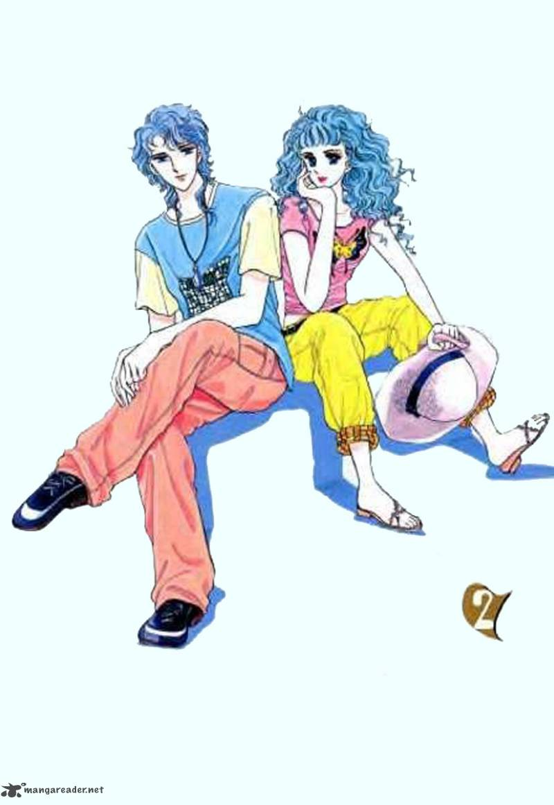

Alternative Names: Don't ResistAuthor(s): Teon Toung-hee
Genres: Romance, Shoujo, Slice Of Life
Release: 2000
Status: Complete
Type:Manhwa
Length: 6 Volumes 32 Chapters
Read Online @:

More Infor @:

Notes
Nora is a programmer in a company that is secretly married to the CEO! It was an arranged marriage by their parents and they were told that they can't get a divorce. They sleep in seperate rooms, have their personal bathrooms and only see each other to say good morning and good night! How will they stop fighting and get into a real relationship? Or will they divorce? who knows....